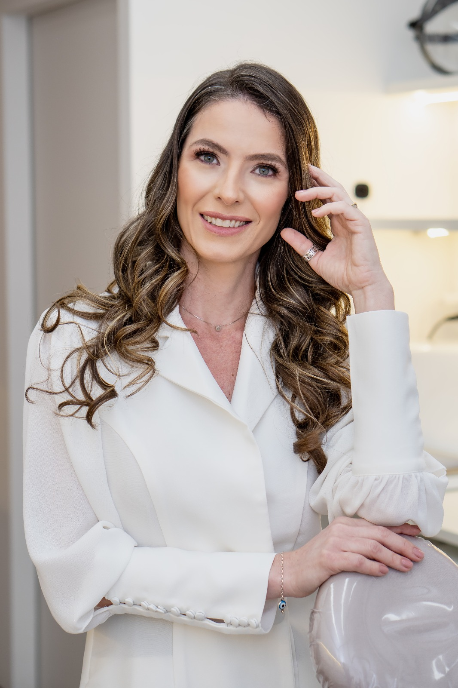

Dra. Soray Abbud
SORAY ABBUD ESTÉTICA AVANÇADA
Eleve sua autoestima com a expertise de quem entende de beleza natural.
Agendar avaliação
Eleve sua autoestima com a expertise de quem entende de beleza natural.
Agendar avaliaçãoExplore nossos protocolos personalizados com foco em naturalidade.

Toxina botulínica associada a microagulhamento de ativos regenerativos e peeling químico. Melhora notável na textura da pele e redução de linhas de expressão.

Suavização das rugas de expressão na testa e glabela, usando a toxina botulínica e para um resultado mais duradouro, fizemos o preenchimento na testa com a técnica hidrolift, mantendo a naturalidade.

Análise tridimensional para definição de contornos e projeção do queixo, criando um perfil mais harmônico, masculino e rejuvenescido.

Fios de sustentação associados a preenchimento full face, microagulhamento com ativos regenerativos e pelling quimico. Efeito lifting com redução da flacidez e contornos mais definidos.

Transformação total com porcelana de alta estetica. Correção de imperfeições de forma, cor e alinhamento inclusive gengival para um sorriso harmonico, claro e radiante, seguindo as proporções ideais para o rosto.

Resultado delicado e natural. O procedimento que rejuvenesce, hidrata, define o contorno e adiciona volume sutil, respeitando a harmonia facial. Lábios mais macios e rugas periorais suavizadas.

Foco em enaltecer o que já tem de belo, respeitando a harmonia da face. Definição com maior simetria aos lábios. Suaviza linhas finas, gerando aparência mais saudável, hidratada e rejuvenescida.

Aplicação estratégica de toxina botulínica para reduzir a exposição excessiva da gengiva, harmonizando o sorriso de forma sutil.

A união perfeita de prótese de alta precisão, devolvendo a juventude e a harmonia total ao sorriso.
Deslize lateralmente para ver mais casos.
"Profissionalismo e competência. A Dra. Soray explicou cada etapa e os resultados superaram minhas expectativas, tudo com muita naturalidade."
Fernanda S.
"Resultado incrível! Me senti acolhida do início ao fim. O cuidado com a pele madura realmente faz a diferença, pareço descansada e não artificial."
Camila R.
Agende sua avaliação e descubra o protocolo ideal para o rejuvenescimento natural que você merece.
Agendar avaliaçãoTransformações sutis ou completas com resinas de alta performance ou porcelana, com o objetivo de harmonizar as proporções do sorriso.
Técnicas avançadas de clareamento para devolver a luminosidade que você tanto deseja.
Recursos mais modernos em ativos regenerativos, seja injetável ou por microagulhamento, associados ou não a peelings químicos para uma pele radiante.
Devolvendo firmeza com precisão, gerenciando o envelhecimento.
Planejamento estratégico com uso do ácido hialurônico, devolvendo volume e sustentação onde o tempo agiu. Repõe o volume das maçãs do rosto (o famoso efeito "top model look") e das têmporas. Define o contorno da mandíbula, mento (queixo), lábios e nariz.
Recuperação estética e funcional fixada sobre implantes. Devolve a estabilidade e segurança ao mastigar para pacientes que perderam um ou mais dentes. Realizado em parceria com a Dra. Fernanda Soares.

Associação de técnicas usando a ciência e tecnologia para promover rejuvenescimento com segurança, naturalidade e eficácia.
Abordagem multidimensional que atua nas camadas da pele, fugindo dos exageros.
Cada protocolo é único, respeitando a história e as necessidades do seu rosto.
Transformação gradual e natural, com acompanhamento em cada etapa.
O verdadeiro luxo é parecer que você sempre foi assim.